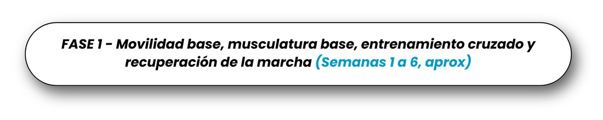
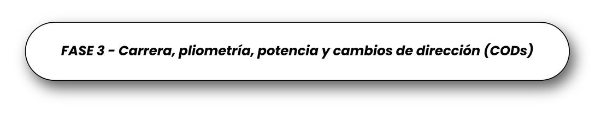
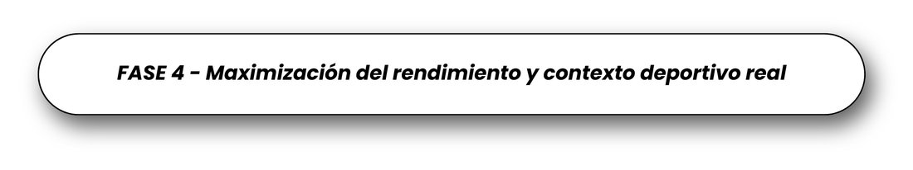
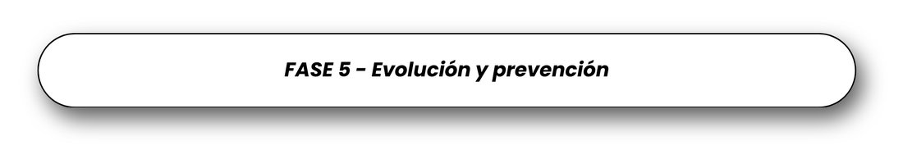
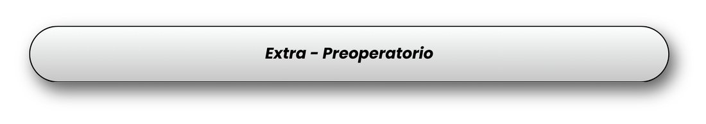

Pasar por el quirófano es solo el 10% del camino. El verdadero reto empieza el día que te quitan los puntos y te enfrentas a una realidad: tu rodilla no responde, ha perdido su musculatura y el miedo a una recaída te frena en cada paso.
El error de la mayoría es creer que la rehabilitación de la mutua o el hospital es suficiente para volver a rendir. Esas sesiones están diseñadas para que camines sin muletas y recuperes una vida cotidiana básica, no para que vuelvas a correr, saltar o entrenar pesado.
Para recuperar una rodilla operada al 100%, necesitas un mapa de ruta que respete los tiempos biológicos del tejido pero que exija rendimiento de forma progresiva. No se trata de hacer extensiones con una goma en camilla durante meses, se trata de seguir un sistema cerrado de 5 fases consecutivas.
De hecho, las rehabilitaciones en seguros, mutuas, o la Seguridad Social suelen enfocarse en la Fase 1 y ya, y con suerte, algo de Fase 2.
Luego está el otro extremo, personas que intentan llegar a competir o hacer algún deporte de alta intensidad a los pocos meses por tratar de “acelerar” el proceso.
Si te saltas una sola fase o avanzas antes de tiempo, estarás comprando papeletas para sabotear la cirugía de diferentes formas:
Aumento del dolor por hacer cosas demasiado avanzadas. Estancamiento y sensación de que hagas lo que hagas, no mejoras. Recaída e incluso quizás volver a pasar por quirófano, y tener que repetir todo el proceso de nuevo. ...
Estoy seguro que no te gustaría que esto pase. Por suerte, se puede evitar, siguiendo un sistema con criterios claros de progresión entre fases.
Si de verdad tu objetivo es recuperarte al 200% y evitar una recaída, recuperar la confianza por completo en tu rodilla y no sentirte limitado en absoluto, tu proceso debe pasar por estas 5 fases obligatorias. Ninguna se puede saltar, y el cambio de fase nunca se hace por "tiempo", sino por criterios objetivos:

El objetivo de las primeras 4-6 semanas tras pasar por el quirófano no es entrenar la rodilla, sino asentar las bases de la recuperación.
Nos enfocamos en mitigar la inflamación, recuperar los grados de movilidad perdidos, evitar al máximo la atrofia muscular mediante estrategias específicas (activación del cuádriceps, entrenamiento cruzado, imaginería motora...) y recuperar la marcha.
Si pasas esta fase cojeando, con la musculatura completamente apagada o con la rodilla inflamada... sabotearás el resto del proceso.
Dentro de mi programa, a esta fase la llamamos ASIENTA.
Esta es la fase pura de entrenamiento en el gimnasio. El objetivo principal es reducir al máximo la diferencia de tamaño y fuerza entre ambas piernas mientras terminamos de conquistar el 100% de la movilidad articular.
Se debe seguir una progresión estricta de carga, y se debe pasar de trabajo bilateral a trabajo asimétrico, para terminar consolidando la fuerza en unilateral. Aquí es donde se construye el blindaje muscular que tu rodilla necesita para soportar impactos. De hecho, incluso se aconseja ya en esta fase meter algunos impactos bastante básicos y sencillos.
Dentro de mi programa, a esta fase la llamamos CONSOLIDA.

Aquí donde cualquier recuperación de seguros, mutuas... ya se pierden (de hecho, en muchos casos, incluso a inicios o mitad de la Fase 2 )
Una vez que la pierna operada tiene la fuerza estructural suficiente, es el momento de pliometría e impactos de mayor nivel, no los básicos que se han trabajado en la Fase 2.
En esta fase se inicia la transición hacia la carrera continua y los primeros desplazamientos controlados, tanto frontales como laterales (45, 90 y 180º) Introducimos además los primeros estímulos de potencia y el trabajo cognitivo para que el cerebro vuelva a confiar en la articulación ante estímulos imprevistos.
Además, dependiendo del deporte de la persona, se empezarán a realizar esas acciones asociadas a dicho deporte en un contexto controlado y/o amistoso.
Dentro de mi programa, a esta fase la llamamos ELEVA.

Aquí ya se busca aumentar la intensidad casi al máximo, y tratar de volver a rendir a nivel deportivo a un nivel similar al previo a la cirugía.
Se busca transferir toda la fuerza y la agilidad ganadas en la fase anterior hacia un contexto deportivo real, no amistoso.
Todo lo que aprendiste a hacer en la Fase 3 (saltar, frenar, cambiar de dirección) ahora se ejecuta a máxima velocidad, con mayor resistencia y bajo fatiga controlada, simulando las demandas reales de tu deporte o disciplina. Dentro de mi programa, a esta fase la llamamos RINDE.

La fase final no consiste solo en volver a jugar o entrenar como antes; consiste en superar tu nivel previo a la lesión.
Se busca optimizar tus capacidades físicas para que seas un atleta más fuerte, eficiente y resiliente que el día que te rompiste.
Siempre digo lo mismo → Si tu yo del pasado se rompió, y tu objetivo es “volver a estar como antes”, volverás a tener papeletas para romperte de nuevo. SIEMPRE buscar ser mejor que antes, para tratar de evitarlo.
Se debe consolidar un plan de prevención a largo plazo diseñado específicamente para tu deporte y contexto personal, asegurando que mantengas tu rodilla protegida para siempre y elimines por completo el miedo a una recaída.
Dentro de mi programa, a esta fase la llamamos EVOLUCIONA.

De hecho, si quieres asegurarte que todas estas fases vayan perfectamente, en los tiempos establecidos, y sin complicaciones, se recomienda encarecidamente que realices un pre-operatorio de calidad, donde llegues a la cirugía en las mejores condiciones posibles.
Si todavía estás a tiempo porque aún no te has operado, te dejo por aquí este documento cortito que te va a ayudar a entender la importancia y qué criterios deberías cumplir.
El verdadero secreto para no volver a pasar por el quirófano y recuperar la total confianza en tu pierna está en saber exactamente cuándo cambiar de fase, y eso no va por el número de semanas que han pasado desde la operación, sino por el cumplimiento de criterios objetivos de fuerza, movilidad y control neuromuscular.
Una persona puede estar operada hace 6 meses, pero tener la funcionalidad de alguien de Fase 2 por haber hecho un mal trabajo en todo ese tiempo.
Avanzar a ciegas, quemar etapas por ansiedad o estancarte en la fase de camilla de la mutua es la receta perfecta para cronificar la lesión y/o romperte la otra pierna.
Tu caso requiere una auditoría de tu estado actual para saber en qué fase real te encuentras hoy y qué estímulo necesita tu tejido para avanzar sin riesgo.
Ya tenemos el chat abierto en Instagram. Vuelve allí y dime:
¿De qué te operaron exactamente y hace cuánto tiempo? ¿Cuál es tu mayor limitación o miedo en este momento?
Cuéntame acerca de tu caso y te indicaré qué progresión deberías hacer para tener el mayor éxito posible en tu cirugía.
(Nota: Mi equipo y yo revisamos los casos diariamente para asegurar que la recomendación sea la correcta).
¿Quieres que lo veamos aplicado a tu caso? Cada rodilla y cada proceso es distinto, y muchas veces pequeños ajustes marcan una gran diferencia.
Escríbeme sin compromiso